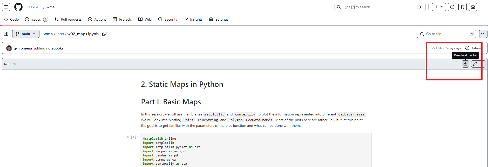

Follow these instructions and test your installation prior to the first Lab Session (Wed, 31st of January). If you experience any issues, write a message on the Ms Teams channel of the module. Setting up the Python environment is necessary for:
- Executing the Jupyter Notebooks of the Lab sessions of the course.
- Preparing your own Jupyter Notebooks for the assignments (one each).
Setting up the Working Environment
Install Miniconda (and Python)
We will use Minconda to handle our working environment. Miniconda is a free minimal installer for conda. It is a small bootstrap version of Anaconda that includes only conda, Python, the packages they both depend on, and a small number of other useful packages (like pip, zlib, and a few others)
- Install Miniconda:
- Option 1: On a UoL Machine: Download and install Miniconda from here. This will install Miniconda and Python in
C:\. If this process is aborted because it requires administrator rights, pressStart, selectInstall University Applications, type and chooseMiniconda. - *Option 2 Recommended**: Install Miniconda on your personal Laptop: Follow the instructions here, depending on your OS.
- Option 1: On a UoL Machine: Download and install Miniconda from here. This will install Miniconda and Python in
- During the installation, leave the default settings. In particular, when asked whom to “Install Miniconda for”, choose “Just for me”.
Important: If you do choose to work on University Machines you will have to reinstall Miniconda every lab session unless you use a PC where Miniconda has been installed already.
Alternatively, you can work on the lab notebooks directly on the web. This does not require to install Miniconda. However, it represents a much slower option, especially when setting up the environment. To do so, you can access the data and the lab notebooks in the \labs directory from a virtual copy of the course repository here. If you opt for this session, you do not need to follow the rest of the instructions below.
Set up the Miniconda Environment
- Type in the search bar and find the
Anaconda Prompt (miniconda 3). Launch it, and writeconda update. - Download the environment.yml whenever it’s handy for you, write
conda env create -n envs456 --file envs456.ymlin the prompt and pressEnter; unless theenvs456.ymlfile is located in the main directory that you see in the prompt, e.g.C:\, you need to specify the full directory of the file (including the file name). - If you are prompted any questions, press
y. This process will install all the packages necessary to carry out the lab sessions.
Set up the Directories
- Create a folder where you want to keep your work conducted throughout this course. For example, call it
ENVS456. You can save it wherever you want. If you are working on a university machine, it could be worth creating it inM:/, which should your “virtual” hard-disk. - In
Minicondawriteconda activate envs456and pressEnter. This activates your working environment. - Afterwards, run
jupyter server --generate-configinMiniconda. This, at least in Windows, should create a file to:C:\Users\username\.jupyter\jupyter_server_config.py. - Open the file with a text editor (e.g. Notepad++), do a
ctrl-fsearch for:c.ServerApp.root_dir, uncomment it by removing the and change it toc.ServerApp.notebook_dir = 'C:\\your\\new\\path, for example the directory where you created thewebmappingfolder. In the University Machines, it is advised to work on the directoryM:\. - Save the file and close it.
Prepare the Lab Data
Start a Lab Session
- Download the Jupyter Notebook of the session in your folder. Choose one jupyter notebook and click “Dowload raw file” as shown below
.
- Save the file in the
webmappingfolder on your machine, inside another folder called, for examplelabsornotebooks. Yourwebmappingfolder should at least contain adataand alabsfolder. - Type in the search bar, find and open the
Anaconda Prompt (miniconda 3). - Write and run
conda activate envs456. - Write and run
jupyter notebook. This should open Jupyter Notebook in your default browser. Navigate to your course folder and open the notebook downloaded in step 1. - You can now work on your copy of the notebook.